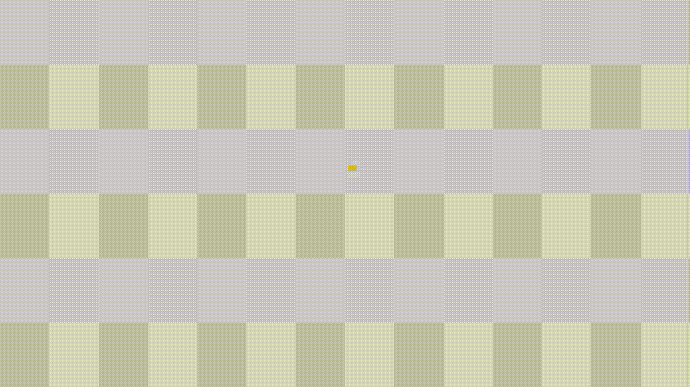

Proyectos
PC Service & Restore
Diseño del hosting y login para un café internet de manera responsiva utilizando tenologías como HTML, CSS, PHP

Diplomado (ADDSWN)- FESC
Vídeo introductorio para los estudiantes del diplomado "Análisis, diseño y desarrollo de sitios web en los negocios"

Consultorio Médico Pediátrico
Página para consultorio pediátrico, agilizando el registro de consultas, horarios y especializaciones

Ciudad Virtual
Vídeo del 8vo. Congreso de Informática de la FESC donde se da a conocer "Ciudad Virtual" una plataforma para la comunidad UNAM

Contacto